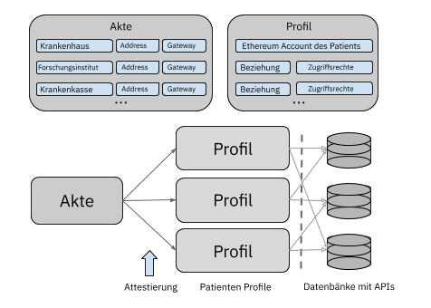

Technische Beschreibung
In diesem Artikel wird erklärt, was RedMedic aus technischer und funktionaler Sicht ist.RedMedic ist eine dezentrale Anwendung aus der Ethereum Blockchain. Diese Anwendung verwaltet den Zugriff auf medizinische Patientendaten. Durch einfache Kryptographie von öffentlichem und privatem Schlüssel kann der Patient mit seiner digitalen Signatur sicher steuern, wer Zugriff auf seine Daten hat. Ziel dieses Projekts ist es, diese Funktionalität als die Grundlage für die Entwicklung weitergehender Anwendungen, wie z.B. ein Markt für den Kauf und Verkauf von medizinischen Daten oder intelligente Vereinbarungen mit Versicherungsgesellschaften zu nutzen.
Wenn Sie nicht wissen, was die Blockchain-Technologie ist oder Sie nicht sehr gut verstehen, wofür sie gedacht ist, schauen Sie sich folgende Links an: (sie sind in der Reihenfolge der Schwierigkeit angeordnet)
1) Was ist Blockchain in 3 Minuten von YouKnow
2) Ethereum und Smart Contracts von Oscar Balcells
3) Yellowpaper von Gavin Wood und Vitalik Buterin
Dezentrale Datendrehscheibe für Gesundheitsdaten
Das Wichtigste ist, genau zu verstehen, was eine dezentrale Managementsystem von Gesundheitsdaten ist.Zuerst werde ich klären, was ich meine, wenn ich "medizinische Daten" oder "Gesundheitsakten" sage.
Jeder Patient hat ein Profil und in diesem Profil sind Daten über ihn registriert. Es gibt für jeden Patienten zwei Arten von Profilen gibt: Es gibt viele Teilprofile und das Masterprofil. Das Teilprofil ist das Profil, das Krankenhaus A oder Krankenhaus B über Sie in seiner Datenbank gespeichert haben. Das Masterprofil ist das Ergebnis. das Teilprofil von Krankenhaus A mit dem Teilprofil von Krankenhaus B zu kombinieren. Es klingt kompliziert, aber das Einzige, was man wissen muss, ist, dass das Masterprofil das Ergebnis der Aggregation aller Teilprofile eines Patienten ist.
Warum ein Teilprofil? Ihre medizinischen Daten werden nicht nur in einem einzelnen Krankenhaus oder Labor generiert. Aus diesem Grund liegen Ihre Daten in verschiedenen Datenbanken verschiedener Gesundheitszentren. Es wird Gelegenheiten geben, in denen eine Person nur ein bestimmtes Dokument teilen möchte. und nicht sein ganzes Profil.
Und welche Informationen wird es in RedMedic über einen Patienten geben? Es wird deine Krankenakte sein, die gleiche, die im Krankenhaus aufbewahrt wird. Ein Filter wird auf diese Krankenakte angewendet, um irrelevante Informationen Informationen des Zentrums zu entfernen. Dann wird ein weiterer Filter angewendet, um alle Felder zu standardisieren, z.B. wenn in einer Analyse der Kaliumgehalt in Gramm pro Liter gemessen wird und der Standard in RedMedic zur Messung des Kaliumgehaltes Minimol pro Liter ist, wird die Umrechnung automatisch durchgeführt.
Eine Ressource ist die kleinste unterteilbare Einheit einer Krankenakte. Jede Ressource kann in diesem System einer bestimmten Kategorie angehören. Diese werden von der Fast Healthcare Interoperability Resources (FHIR) genehmigt. Spezifisch ist es der Argonaut Standard, einer der neuesten, der von Apple, Epic und anderen großen Namen verwendet wird. Die Liste der Kategorien sieht wie folgt aus: Bild, Allergie/Intolleranz, Laborergebnis, Zustand, Immunisierung, Verfahren und Medikamente. Es gibt mehr im Argonaut Standard, aber ich habe nur diese genommen, weil sie bisher oft benutzt werden und einfacher zu verstehen und zu implementieren sind.
Wir haben den Teil der medizinischen Daten mehr oder weniger jetzt geklärt. Kommen wir also zum folgendem Punkt. Was ist ein Datenmanagementsystem (ohne dezentralisiert sein zu müssen)?
In diesem Datenmanagementsystem (RedMedic) werden die Berechtigungen festgelegt, die jede Person hat, um auf eine bestimmte Information zuzugreifen. Wenn ich zum Beispiel als Patient in meinem elektronischen RedMedic-Profil festlege, dass jeder meine Blutgruppe und meine Allergien sehen kann, wird jeder Arzt oder Krankenhaus in der Lage sein wird, diese Informationen zu sehen und sie zum Beispiel zu nutzen, um mein Leben in einem extremen Notfall zu retten.
(wenn ich sage, dass eine bestimmte Person Zugang hat, meine ich eine Person mit einer bestimmten digitalen Signatur eines privaten Elliptic Curve Digital Signature Algorithm (ECDSA) Schlüssels)
Eine sehr wichtige Sache, die Sie beachten sollten, ist, dass es in RedMedic nichts über Sie gibt, sondern nur die Berechtigungen derjenigen, die Zugang zu ihnen haben. Ihr medizinisches Profil ist nicht in RedMedic, sondern wird in den Datenbanken der verschiedenen Gesundheitszentren, in denen Sie waren, verteilt. RedMedic ist keine medizinische Datenbank, es ist nur ein System, um festzustellen, wer worauf je nach Art der Daten Sie Zugriff hat. Diese Daten werden zum Zeitpunkt der Darstellung abgerufen und danach wieder gelöscht.
Warum werden die Daten nicht direkt in die Blockchain übernommen?
Erstens, weil die medizinischen Daten riesig sind. Sie beanspruchen viel Platz, und in den ineffizienten Blockketten, die wir heute haben, würde das zu viel Geld kosten. Es wäre ein wenig skalierbares System.
Zweitens, weil es sehr kompliziert ist, Geheimnisse in einer öffentlichen und offenen Blockchain zu bewahren. Daher erfordert die Bereitstellung halbprivater Daten viel Engineering und Kryptographie, um die Sicherheit dauerhaft zu gewährleisten.
Und drittens, weil die Tatsache, dass die Daten von einem Krankenhaus bewacht werden, diese bestätigt und legitimiert. Wenn jede Person ihre Daten manuell hochgeladen hat, könnte sie beispielsweise viele falsche Profile erstellen oder in ihrem eigenen Profil liegen, um mehr Geld beim Verkauf ihrer Daten zu sammeln.
Dezentralisiert? Wofür?
Ich habe einen Artikel darüber geschrieben. Hier Ich überlasse es Ihnen.
Eine dezentrale Anwendung wie RedMedic besteht aus verschiedenen Smart Contracts mit unterschiedlichen Funktionalitäten und einem dezentralen Frontend. Beginnen wir mit einem Blick auf die Liste der Teilnehmer in RedMedic, um zu sehen, wie jeder einzelne mit der Anwendung interagiert.
1) Patient
Der Patient ist der Nutzer des Netzwerks und entscheidet, wer Zugriff auf was hat. Er hat einen privaten Schlüssel, mit dem er seine Transaktionen signieren kann, die er an RedMedic sendet, um Berechtigungen zu bearbeiten. Der Patient interagiert daher auf drei Arten mit RedMedic: Er registriert und bearbeitet Berechtigungen und er kann auch seine Daten einsehen.
Da RedMedic eine öffentliche Anwendung ist und der Welt offen steht, müssen mehr Vorkehrungen getroffen werden, um ein Hacken des Netzwerks zu vermeiden. Um zu vermeiden, dass ein falscher Patient beitritt, muss die Registrierung eines neuen Patienten bei einer Krankenkasse erfolgen, was garantiert, dass es sich um einen echten Patienten handelt. Diese Regel ist sinnvoll, da sich ein Patient normalerweise bei RedMedic registriert, wenn er einen Arzt aufsucht.
2) Wächter
Der Wächter ist derjenige, der das Sorgerecht für etwas hat. In diesem Fall speichert der Wächter die Daten, Daten von seinen Patienten. Jeder Gesundheitsdienstleister kann ein Wächter sein, z.B ein Krankenhaus, ein Labor oder eine Versicherungsgesellschaft. Die einzige Voraussetzung dafür, dass ein Gesundheitsversorger ein Wächter ist, ist, dass er von mehr als 20% des Netzwerks akzeptiert wird. Warum 20%? Es ist eine beliebige Zahl, die ich einfach festgestellt habe. Wichtig ist, dass diese Zahl weder zu klein noch zu groß ist, und wenn sie zu groß wäre, würde der Wettbewerb zwischen den Unternehmen den Zugang für neue Unternehmen blockieren, und wenn sie zu klein wäre, könnten bösartige Akteure das Netzwerk infiltrieren, um es zu sabotieren.
Ein Wächter interagiert mit RedMedic auf eine der folgenden Arten: Registrieren, für einen neuen Wächter stimmen, einen Patienten registrieren und eine neue Anbieter-Patienten-Beziehung anlegen (ich werde als nächstes erklären, was sie sind).
3) Datencenter
RedMedic dient als "Portal", um Daten abzurufen. Jeder Wächter hat somit eine Datenbank, sodass Daten extern erfasst werden können, von Accounts, die die Berechtigung haben, auf sie zuzugreifen.
Ein Wächter bewacht die Profile seiner Patienten, die Daten, die in seinem Zentrum generiert wurden. Jeder Wächter wird eine API besitzen und das Gateway zu dieser API wird in der Blockchain veröffentlicht. Ein kleines Fenster, in dem sich jemand verbindet, um Daten zu empfangen. Wenn jemand sich verbindet, um nach Daten zu fragen, schaut sich der Wächter die digitale Signatur dieser Person an (die Signatur befindet sich in der Transaktion), und wenn er sieht, dass diese Signatur die Erlaubnis hat, auf die Daten zuzugreifen, um die er bittet, wird der Wächter ihm geben, was er verlangt.
Die Datenbank des Wächters wird mit der lokalen Datenbank des Gesundheitsversorgers synchronisiert. Wenn der Patient das Zentrum besucht und z.B. eine Allergie festgestellt wird, aktualisiert der Arzt die Datenbank des Zentrums und somit auch die mit RedMedic verbundene Datenbank.
Mining Im Moment befindet sich RedMedic in Ethereums Blockchain. Das bedeutet, dass die Miners in RedMedic, die die Blockchain sichern und ausführen, i.e neue Blöcke finden und die Smart Contracts exekutieren, die gleichen Miner wie Ethereum sind. Eine mögliche Option, die Kosten innerhalb der Plattform zu senken, wäre jedoch, Ethereum zu klonen und eine unabhängige Blockchain zu haben. In dieser Blockchain könnte ein benutzerdefiniertes Konsensusprotokoll für die Plattform erstellt werden. Die praktikabelste Option für dieses Protokoll wäre der Nachweis der Autorität, was ganz kurz bedeutet, dass die Miners dieselben Wächter des Systems sind.
Smart Contracts Das ist der wichtige Teil. Es sind die Zahnräder, die die Maschine zum Laufen bringen, die Logik des Systems. Welche Arten von Smart Contracts gibt es in RedMedic und wofür wird jeden einzelne verwendet?
1) Gesetz zur Registrierung von Wächtern
Wenn sich ein Wächter registrieren möchte, kommuniziert er mit diesem Smart Contract und sendet ihm seine eigenen Daten, wie z.B. die Zugangstür für seine Daten, und eine digitale Signatur, die bestätigt, dass er die Organisation ist, die er vorgibt zu sein. Der Rest der Wächter wird dann mit diesem Smart Contract kommunizieren, um darüber abzustimmen, ob sie den neuen Wächter genehmigen oder nicht. (Abstimmungen können auch automatisiert werden). Wenn der Wächter abgelehnt wird, raus. Wenn es genehmigt wird, wird es in die Liste von registrierten Wächtern von RedMedic aufgenommen.
2) Patientenstammprofil
Wenn ein Patienten bei RedMedic gemeldet wird, wird ein neues Masterprofil aufgelegt, das ihm gehört. Es gibt nur ein Masterprofil pro Patient. Bei der Erstellung dieses Masterprofils werden die Patientendaten so festgelegt, dass sie nur in der Blockchain (und nicht im wirklichen Leben) identifiziert werden können. Dieses Masterprofil ist eine Art Aggregation aller Teilpatientenprofile. Daher enthält es eine Liste von Verweisen auf diese Teilprofile.
Wenn eine neue Anbieter-Patienten-Beziehung aufgebaut wird oder RedMedic zum ersten Mal in dieser Beziehung verwendet wird, wird ein neuer Teilprofil in diesem Patientenstammprofil aufgelegt, der eine Beziehung zwischen Patient A und dem Leistungserbringer B herstellt. Dieser Teilprofil wird mit dem Masterprofil des Patienten verknüpft und enthält die Berechtigungen, wer auf was innerhalb aller in dieser Beziehung erzeugten Daten zugreifen darf.
Hier ist ein Diagramm, zur Veranschaulichung:

Wenn Sie die Funktionalität von RedMedic erweitern möchten, erstellen Sie einfach neue Arten von Smart Contracts.